금속재료기사 (2019-08-04 기출문제)
1과목: 금속조직학
1. X선의 회절조건을 나타내는 관계식은? (단, d는 면간거리, θ는 X선의 입사각, λ는 X선의 파장, n은 상수이다.)
- 2n cosθ = λd
- 2n sinθ = λd
- 2d cosθ = nλ
- 2d sinθ = nλ
(정답률: 82%)

2. 체심입방격자의 최근접 원자의 배위수는?
- 4
- 6
- 8
- 10
(정답률: 81%)
3. 면심입방격자에서 가장 큰 원자 밀도를 가진 면은?
- {110}
- {111}
- {100}
- {112}
(정답률: 77%)
4. 다음 중 규칙격자가 불규칙격자와 비교하여 전기전도도가 큰 이유는?
- 풀림을 단시간에 처리하므로
- 고온에서 핵생성이 촉진되므로
- 전도전자의 산란이 적어지므로
- 불규칙격자의 상호치환이 활발하므로
(정답률: 85%)
5. 용질원자가 용매원자에 고용되는 정도를 결정하는 중요 요소가 아닌 것은?
- 개재물
- 결정구조
- 원자의 크기
- 원자의 전기음성도
(정답률: 85%)
6. 오스테나이트에서 펄라이트로 변태할 때, 다음 중 일반적으로 어느 곳에서 가장 먼저 변태가 시작되는가?
- Austenite의 결정입계
- Austenite의 결정 내 중심
- Austenite의 결정 내 철 표면
- Austenite의 결정 내 탄소 표면
(정답률: 85%)
7. 면심입방격자인 금속이 응고할 때 결정이 성장하는 우선방향은?
- [100]
- [001]
- [121]
- [111]
(정답률: 70%)
8. 결정 입도 번호가 7일 때, 촬영한 1 inch2 당 평균 결정립 수는 몇 개인가? (단, ASTM 기준이며, 배율은 100배 이다.)
- 32개
- 64개
- 128개
- 256개
(정답률: 75%)
9. 다음 중 금속의 재결정에 대한 설명으로 틀린 것은?
- 재결정은 핵생성 및 성장 과정이다.
- 핵생성속도가 작고 핵성장속도가 크면 결정립이 크게 성장한다.
- 핵생성속도가 크고 핵성장속도가 작으면 미세한 결정립이 된다.
- 고순도의 금속일수록 재결정화가 어렵기 때문에 고온 풀림처리를 해야 한다.
(정답률: 79%)
10. 냉간가공 후 수행하는 풀림처리에 대한 설명으로 옳은 것은?
- 강의 경우 마텐자이트가 생성된다.
- 열응력에 의해 강화된다.
- 재료의 강도에 영향을 미치지 않는다.
- 전위밀도의 감소에 의해 연화된다.
(정답률: 78%)
11. A-B 2원계 상태도가 다음과 같을 때, B가 20wt%인 합금이 T1 온도에서 액상과 고상의 비는?
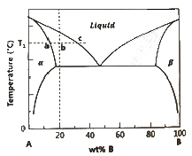
- 액상 : 고상 = ab : bc
- 액상 : 고상 = ac : bc
- 액상 : 고상 = ab : ac
- 액상 : 고상 = bc : ab
(정답률: 80%)
12. 슬립계에 대한 정의로 옳은 것은?
- 슬립면과 전위의 조합
- 슬립면과 방향의 조합
- 선결함과 면결함의 조합
- 슬립 방향과 함수의 조합
(정답률: 73%)
13. 다음 상태도에 표시한 합금 중 상온에서 단일상이 나타나는 합금은?
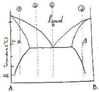
- ⓐ
- ⓑ
- ⓒ
- ⓓ
(정답률: 67%)
14. 다음의 반응은 어떤 반응인가?
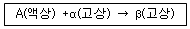
- 공정반응
- 포정반응
- 편정반응
- 공석반응
(정답률: 73%)
15. 3성분계 상태도에서 자유도가 0이 될 때 상의 수는 몇 개인가? (단, 압력은 일정하다.)
- 1
- 2
- 3
- 4
(정답률: 74%)
16. 순철의 동소변태 온도는 약 몇 ℃ 인가?
- 210
- 723
- 910
- 1537
(정답률: 80%)
17. 다음 중 구리 및 구리합금의 현미경 조직 시험의 부식제로 가장 적합한 것은?
- 나이탈
- 염산 용액
- 염화제2철 용액
- 수산화나트륨 용액
(정답률: 74%)
18. 다음 중 금속의 소성변형기구와 가장 거리가 먼 것은?
- 슬립
- 쌍정
- 핵생성
- 킹크
(정답률: 74%)
19. 다음 중 아공석강의 조직을 구성하는 상으로 옳은 것은?
- 시멘타이트 + 오스테나이트
- 페라이트 + 펄라이트
- 펄라이트 + 오스테나이트
- 솔바이트 + 투루스타이트
(정답률: 75%)
20. 고용체에서 규칙도(Degree of order)가 1인 것을 무엇이라 하는가?
- 완전규칙 고용체
- 반규칙 고용체
- 반불규칙 고용체
- 완전불규칙 고용체
(정답률: 84%)
2과목: 금속재료학
21. 다음 중 모넬메탈에 대한 설명으로 틀린 것은?
- KR Monel은 K Monel에 W 함량을 높게 하여 쾌삭성을 개선한 강이다.
- R Monel은 소량의 S를 첨가하여 쾌삭성을 개선한 강이다.
- K Monel은 용체화 처리한 후 뜨임해서 석출경화한 강이다.
- H Monel은 Si를 첨가하여 석출경화한 것이다.
(정답률: 68%)
22. 분말야금에서 분말의 유동도에 대한 설명으로 틀린 것은?
- 성형 다이의 설계 시 분말의 유동도를 고려해야 한다.
- 분말의 유동도가 높으면 제품의 생산성이 떨어진다.
- 분말의 유동도가 높으면 제품의 특성이 균일해진다.
- 각진 형태의 제품이 둥근 형태의 제품보다 분말의 유동도가 중요시된다..
(정답률: 70%)
23. 금속침투법에서 세라 다이징법은 어떤 금속을 침투시키는 방법인가?
- B
- Zn
- Al
- Cr
(정답률: 64%)
24. 강에서 황과 관련된 설명으로 옳은 것은?
- 아연과 결합하여 상온취성을 일으킨다.
- FeS을 생성하여 청열취성을 일으킨다.
- 질량효과를 감소시켜 담금질성을 좋게 한다.
- 쾌삭강에서는 쾌삭성을 향상시키기 위하여 첨가한다.
(정답률: 71%)
25. Sn-Sb-Cu를 주성분으로 하며, 인성, 경도 및 유동성이 우수하여 베어링 합금으로 이용되는 것은?
- 톰백
- 켈멧
- 베빗메탈
- 문쯔메탈
(정답률: 76%)
26. 기계적 강도, 열적 특성 및 내식성 등을 충분히 향상시켜 하중을 지탱하고 열 등에 견뎌야 하는 구조물 또는 그 부품에 사용하는 파인 세라믹스는?
- 바이오 세라믹스
- 엔지니어링 세라믹스
- 일렉트로닉 세라믹스
- 트레디셔널 세라믹스
(정답률: 82%)
27. 다음 중 탈산도에 따른 강괴의 종류가 아닌 것은?
- 킬드강
- 림드강
- 세미킬드강
- 세미림드강
(정답률: 78%)
28. 알루미늄판 등의 판재를 가압성형하여 변형능력을 시험하는 방법은?
- 피로시험
- 인장시험
- 크리프시험
- 에릭슨시험
(정답률: 74%)
29. Al 및 그 합금의 질별 기호에서 W가 의미하는 것은?
- 가공 경화한 것
- 풀림을 한 것
- 용체화 처리한 것
- 제조한 것 그대로인 것
(정답률: 73%)
30. 비철 합금 주물의 편석 현상 중 주물 각부의 온도차 때문에 생기는 편석 현상은?
- 정편석
- 열편석
- 역편석
- 중력편석
(정답률: 77%)
31. Al-Si 합금을 개량 처리를 실시할 때, 개량처리에 사용되는 것은?
- Na
- Cu
- Mg
- Ni
(정답률: 44%)
32. 주철 내에서 강력한 탈황력을 갖는 흑연구상화 원소가 아닌 것은?
- Mg
- Ce
- S
- Ca
(정답률: 67%)
33. 마그네슘에 대한 설명으로 틀린 것은?
- 비중이 약 1.74로 가볍다.
- 열전도도는 Cu, Al 보다 낮다.
- 원료로는 보크사이트, 헤마타이트 등이다.
- 알칼리에는 잘견디나 산이나 염기에는 침식된다.
(정답률: 68%)
34. 분말야금에서 분말의 종류에 따라 소결 전 겉보기 밀도가 다른데, 다음 중 일반적으로 소결 전 겉보기 밀도가 높은 분말에서 낮은 분말로 나열한 것은?
- 구상 > 불규칙상 > 판상
- 불규칙상 > 구상 > 판상
- 판상 > 불규칙상 > 구상
- 불규칙상 > 판상 > 구상
(정답률: 70%)
35. 다음 중 강의 표면경화 열처리에서 고체 침탄 촉진제로 가장 많이 사용되는 것은?
- KCN
- KCl
- NaCl
- BaCO3
(정답률: 66%)
36. 가단주철의 일반적인 특징을 설명으로 틀린 것은?
- Si의 양이 적을수록 경도가 높다.
- 약 500℃까지 강도가 유지되고, 저온에서도 강하다.
- 내식성, 내충격성이 우수하며 절삭성이 좋다.
- 담금질 경화성이 있다.
(정답률: 58%)
37. 영구자석강의 구비조건으로 옳은 것은?
- 항자력이 커야 한다.
- 잔류자속밀도가 낮아야 한다.
- 오스테나이트조직이며, 시효변화가 커야 한다.
- 온도 상승 및 충격 진동에 의한 자기감소가 커야 한다.
(정답률: 65%)
38. 다음 중 전열합금에 요구되는 특성에 대한 설명으로 틀린 것은?
- 가공성이 좋아서 연신, 압연 등이 용이해야 한다.
- 전기저항이 낮고, 저항의 온도계수가 작아야 한다.
- 고온대기 중에서 산화에 견디고, 사용온도가 높아야 한다.
- 고온에서 조직이 안정하고, 열팽창 계수가 작아야 한다.
(정답률: 72%)
39. 다음 중 온도변화에 따라 열팽창계수, 탄성계수 등의 변화가 적은 합금과 가장 거리가 먼 것은?
- 실루민
- 엘린바
- 슈퍼인바
- 플라티나이트
(정답률: 63%)
40. 스테인리스강에 대한 설명으로 틀린 것은?
- Cr과 Ni은 스테인리스강의 기본적인 합금원소이다.
- 오스테나이트 스테인리스강은 자성이 강하다.
- 조직에 따라서 오스테나이트계, 마텐자이트계, 페라이트계, 석출경화계 스테인리스강으로 분류한다.
- 탄화물은 오스테나이트 입계에 석출하여 입계부식의 원인이 된다.
(정답률: 74%)
3과목: 야금공학
41. 다음 중 내화도가 가장 높은 내화물은?
- 마그네시아
- 알루미나
- 실리카
- 뮬라이트
(정답률: 54%)
42. [보기]와 같은 조건에서 금속 M의 융점은 약 몇 K인가?
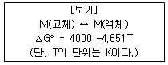
- 68
- 587
- 860
- 1133
(정답률: 72%)
43. 종류가 다른 이상 기체들을 혼합할 경우, Gibbs의 자유에너지 변화(ΔGm)로 옳은 것은? (단, ΔHm는 혼합 엔탈피의 변화, ΔSm는 혼합 엔트로피의 변화, T 는 절대 온도이다.)
- ΔGm=0
- ΔGm=ΔHm
- ΔGm=ΔSm/T
- ΔGm=-TΔSm
(정답률: 67%)
44. 열역학적으로 완전한 내부 평형 상태에 있는 계의 온도가 0 K 이면, 계의 엔트로피는 몇 J/K·mole 인가?
- 0
- 1
- 273
- 298
(정답률: 76%)
45. Mg2Si 화합물 중 Mg 의 중량 백분율은 약 몇 wt%인가? (단, Mg, Si 의 원자량은 각각 24.31, 28.09 이다.)
- 66.66
- 63.38
- 43.38
- 33.33
(정답률: 74%)
46. 코크스의 기공 산출식으로 옳은 것은?
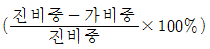
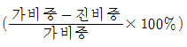
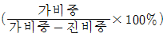
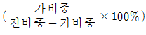
(정답률: 70%)
47. 이상적인 2원계 혼합물을 생성할 때의 ΔSM 은?
- ΔSM=-R(lnXA+lnXB)
- ΔSM=-R(XAlnXA+XBlnXB)
- ΔSM=-RXAXB(lnXA+lnXB)
- ΔSM=-ΔHM(XAlnXA+XBlnXB)
(정답률: 73%)
48. 철강제조 시 슬래그(Slag)의 염기도 계산식으로 옳은 것은?
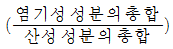
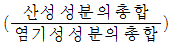
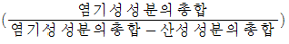
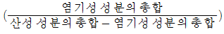
(정답률: 69%)
49. i와 j의 2원계 화합물에서 i 의 화학포텐셜()에 대한 표현이 틀린 것은? (단, U : 내부 에너지, G : 깁스 자유에너지, A : 헬름-홀츠 에너지, nj : i의 몰 수)
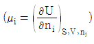
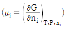
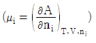
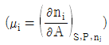
(정답률: 60%)
50. 2원계 합금에서 이상적 활동도 거동을 보여주는 법칙은?
- 달톤의 법칙
- 아마가트의 법칙
- 시버트의 법칙
- 라울의 법칙
(정답률: 67%)
51. 다음의 표현 중에서 열역학적 평형을 나타내는 것이 아닌 것은?
- 온도구배가 시간에 따라 변화한다.
- 엔트로피가 최대값이다.
- 내부에너지의 변화가 없다.
- 자유에너지의 변화가 없다.
(정답률: 66%)
52. 300K, 1 몰의 이상 기체가 4 atm의 압력에서 1 atm으로 등온팽창할 때, 최대 일은 약 몇 J/mole인가? (단, 기체상수는 8.314J/℃·mole 이다.)
- 0
- 1507
- 1883
- 3458
(정답률: 44%)
53. 다음 중 클라우시우스-클라페이론의 식과 가장 거리가 먼 것은? (단, Vg는 기체 1 mole의 부피이다.)
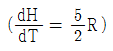
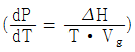
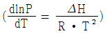
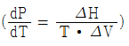
(정답률: 58%)
54. 다음 중 산성 내화물에 해당되는 것은?
- 규석질
- 크로마그질
- 마그네시아질
- 돌로마이트질
(정답률: 71%)
55. 다음 중 규칙용액(regular solution)에 관한 설명으로 틀린 것은?
- 혼합열은 조성에 따라 다르다.
- 혼합 엔트로피는 이상용액의 엔트로피와 같다.
- 2원계에서 한 성분의 몰분율이 0.5일 때 혼합열이 0 이다.
- 성분의 활동도 계수는 온도에 따라 변한다.
(정답률: 58%)
56. 라울형 이상용액이 혼합 생성열(ΔHM) 으로 옳은 것은?
- ΔHM=RT
- ΔHM=0
- ΔHM<1
- ΔHM>1
(정답률: 64%)
57. 다음과 가장 관계 있는 것은?
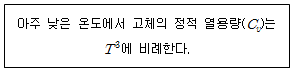
- Joule 의 법칙
- Einstein 의 식
- Debye 의 식
- Dulong-Petit 의 법칙
(정답률: 62%)
58. 다음 중 고로에서 열 정산 시 출열 항목이 아닌 것은?
- 산화철 환원열
- 코크스 연소열
- 노정가스 현열
- 석회석 분해열
(정답률: 47%)
59. 다음 중 조연의 전해 정련법은?
- Parks 법
- Betts 법
- Moebius 법
- Harris 법
(정답률: 48%)
60. 부두아 곡선에서 나타나는 Carbon Solution 반응에 대한 설명으로 틀린 것은?
- 반응식은 ‘CO2 + C → 2CO’이다.
- 저온보다는 고온부에서 반응이 잘 일어난다.
- 저압 조건보다 고압 조건에서 잘 일어난다.
- Carbon Loss 반응이라고도 한다.
(정답률: 58%)
4과목: 금속가공학
61. 다음 중 BCC 결정의 {110}의 면간 거리는? (단, a 는 격자 상수이다.)
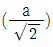
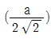
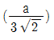
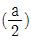
(정답률: 67%)
62. 접촉하고 있는 두 개의 표면이 상대적으로 반복운동을 받을 때, 표면이 손상되는 현상은?
- 열피로
- 코엑싱
- 쇼트피닝
- 프레팅
(정답률: 54%)
63. 다음 중 샤르피 충격시험기에서 충격에너지(E)를 구하는 식으로 옳은 것은?
- E=WR(cosβ-cosα)
- E=WR(cosα+cosβ)
- E=2WR(cosβ-cosα)
- E=WR/2(cosα-cosβ)
(정답률: 75%)
64. 압연할 때 롤과 재료와의 접촉면에서 롤의 곡률반경이 증가하는 현상을 무엇이라 하는가?
- 롤 굽힘
- 롤 열팽창
- 롤 편평화
- 롤 크라운
(정답률: 65%)
65. 공칭 스트레인(ε0)과 진 스트레인(ε)의 관계를 옳게 나타낸 것은?
- ε0 = 1/ε
- ε = ln(1-ε0)
- ε0 = ln(1+ε)
- ε= ln(1+ε0)
(정답률: 69%)
66. 금속기지 속에 미세하게 분산된 불용성 제2상으로 인하여 생기는 강화는?
- 마텐자이트강화
- 변형강화
- 분산강화
- 소각입계강화
(정답률: 75%)
67. 다음 중 크리프 강도가 높은 재료가 갖추어야 할 조건과 가장 거리가 먼 것은?
- 조대한 결정립
- 높은 융점
- 높은 격자저항
- 높은 확산계수
(정답률: 55%)
68. 다음 중 열간가공의 장점이 아닌 것은?
- 기공이 적어진다.
- 가공 시 필요 에너지가 감소된다.
- 조대한 주상정조직이 파괴된다.
- 주조상태보다 연성과 인성이 감소한다.
(정답률: 68%)
69. 결정입자 미세화 강화에 대한 설명으로 맞는 것은?
- 결정입계는 전위의 운동을 활성화시키고 슬립하는 전위와 상호작용운동을 한다.
- 결정입계는 전위의 운동을 방해하는 장애물로서 결정입자가 미세할수록 강도가 커진다.
- ?결정입계는 전위의 운동과는 아무런 상관없이 결정입자가 미세할수록 강도가 커진다.
- 결정입계는 전위운동에 장애물로서 결정입자가 미세화강화에 아무런 관계가 없다.
(정답률: 79%)
70. 후크의 법칙을 옳게 나타낸 식은? (단, σ는 응력이고, E는 탄성계수이고, ε는 스트레인이다.)
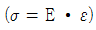
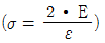
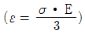
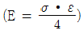
(정답률: 75%)
71. 다음 중 압연재가 롤 사이를 통과할 수 있는 조건으로 옳은 것은? (단, μ = 마찰계수, α = 접촉각)
- μ ≤ tanα
- μ ≥ tanα
- μ = cosα
- μ ≥ sinα
(정답률: 63%)
72. 칼날전위의 전위선과 버거스 벡터가 이루는 각은?
- 0°
- 45°
- 90°
- 180°
(정답률: 76%)
73. 다음 중 취성파괴의 특징과 가장 거리가 먼 것은?
- 균열의 전파속도가 빠르다.
- 이온결정의 벽개파괴와 유사하다.
- 미소 소성변형이 거의 없는 빠른 균열전파에 의한 파괴이다.
- 균열전파 전에 상당량의 소성변형을 초래한다.
(정답률: 70%)
74. 다음 중 고용강화에서 전위와 용질원자 사이의 상호작용기구가 아닌 것은?
- 원자크기 차이에 의한 탄성적 상호작용
- 탄성계수 차이에 의한 상호작용
- 결정입자 조대화에 의한 입계와 상호작용
- 단범위 규칙도 배열에 의한 상호작용
(정답률: 47%)
75. 길이가 1m 인 알루미늄 봉의 길이를 2m 로 늘렸을 때, 진변형률은?
- 0.5
- 0.69
- 1.5
- 1.69
(정답률: 62%)
76. 다음 중 재료의 고온강도를 높이는 가장 적절한 방법은?
- 분산강화
- 가공경화
- 결정립 미세화
- 마텐자이트강화
(정답률: 54%)
77. 압연작업에서 압하량을 크게 하는 조건을 설명한 것 중 틀린 것은?
- 지름이 큰 롤을 사용한다.
- 압연재의 온도를 높여준다.
- 압연재를 뒤에서 밀어준다.
- 롤의 회전속도를 높인다.
(정답률: 73%)
78. 금속의 슬립에 관한 설명으로 틀린 것은?
- fcc 금속에서 슬립면은 {111}, 슬립방향은 <110>이다.
- bcc 금속에서 슬립면은 {110}, 슬립방향은 <111>이다.
- bcc 금속에서 슬립계의 수는 3 개이다.
- fcc 금속에서 슬립계의 수는 12 개이다.
(정답률: 72%)
79. 다음 중 재료를 가공할 때 변형 저항을 높이는 요인과 가장 거리가 먼 것은?
- 전위밀도
- 용매원자
- 용질원자
- 결정립계
(정답률: 69%)
80. Nabbarro Herring 크리프는 다음 중 어떤 크리프와 관련 있는가?
- 확산 크리프
- 전위 크리프
- 결정립계 미끄럼 크리프
- 멱수-법칙 크리프
(정답률: 65%)
5과목: 표면공학
81. Faraday 법칙에 관한 설명으로 틀린 것은?
- 전기도금 시에 석출량은 원자량에 비례한다.
- 전기도금 시에 석출량은 원자가에 반비례한다.
- 전기도금 시에 석출량은 시간에 반비례한다.
- 화학 당량을 페러데이(Faraday)로 나눈 값을 전기화학당량이라 한다.
(정답률: 68%)
82. 강재의 열처리 결함에서 탈탄의 방지 대책이 아닌 것은?
- 탈탄방지제를 도포한다.
- 강의 표면에 도금을 한다.
- 고온에서 장시간 가열을 한다.
- 분위기 가스에서 가열하거나 진공가열을 한다.
(정답률: 79%)
83. 화성피막처리에 구리이온, 질산염 등을 첨가하여 처리시간을 5~ 10분으로 단축시킨 피막 처리법은?
- 본데라이징법
- 옥살산염처리법
- 인산염피막처리법
- 크로메이트처리법
(정답률: 64%)
84. 화학적 기상도금(CVD)법의 특징으로 틀린 것은?
- 처리온도가 1000℃ 정도로 높다.
- 파이프의 내면 미립자에는 피복이 불가능하다.
- 두꺼운 피복도 가능하며, 여러 성분의 피복도 가능하다.
- 형성된 피막은 모재와 확산 또는 반응을 일으켜 밀착성이 매우 좋다.
(정답률: 73%)
85. 다음 중 아노다이징 처리의 목적과 가장 거리가 먼 것은?
- 표면착색
- 내식성 향상
- Al2O3 피막형성
- 인장강도 향상
(정답률: 68%)
86. 공업적으로 쓰이고 있는 양극산화 방법이 아닌 것은?
- 황산법
- 수산법
- 크롬산법
- 염화칼륨법
(정답률: 57%)
87. 전자현미경에 프로브의 크기는 전자선의 회절효과와 렌즈의 수차에 따라서 결정되는데, 다음 중 전자광학계의 결함에 의해서 발생되는 렌즈 수차가 아닌 것은?
- 색수차
- 초점수차
- 구면수차
- 비점수차
(정답률: 51%)
88. 다음 중 화학적 기상도금(CVD)의 종류로 옳은 것은?
- 배기 CVD
- 가압 CVD
- 물리적 CVD
- 플라즈마 CVD
(정답률: 70%)
89. 착염욕에 대한 특징을 설명한 것 중 틀린 것은?
- 단순염욕에 비하여 균일전착성이 우수하다.
- 착염욕은 레벨링이 좋은 전착물을 얻기는 힘들다.
- 단순염욕에서 가능했던 합금도금이 착염욕에서는 불가능하다.
- 단순염욕보다 높은 과전압하에서 이루어지기 때문에 석출물이 미립자이며, 밀도가 높다.
(정답률: 59%)
90. 다음 중 열처리에서 뜨임 처리의 목적으로 가장 적절한 것은?
- 경도 부여
- 인성 부여
- 조직 경화
- 재료 표준화
(정답률: 73%)
91. 염욕 열처리하기 전에 실시하는 강박 시험의 목적은?
- 염욕 중의 잔류 산소량 추정
- 염욕 중의 잔류 질소량 추정
- 염욕 중의 잔류 탄소량 추정
- 염욕 중의 잔류 수소량 추정
(정답률: 60%)
92. PVD법의 특징에 대한 설명으로 틀린 것은?
- 코팅층의 표면이 균일하다.
- PVD법에는 진공증착, 음극스패터링, 이온플레이팅 등이 있다.
- 고순도의 코팅층을 얻을 수 있다.
- 헬륨 가스가 가압된 상태에서 주입되어야하기 때문에 가스 비용이 많이 든다.
(정답률: 62%)
93. 고속도 공구강의 표면에 증착처리 방법으로 TiN과 TiC를 적층피복하려고 할 때, 다음 중 가장 적절한 방법은?
- 물리적 증착
- 크로마이징 증착
- 증기 세라다이징 증착
- 무전해 니켈 복합 증착
(정답률: 55%)
94. 다음 중 강의 경화능에 영향을 미치는 인자와 가장 거리가 먼 것은?
- 탄소량
- 잔류응력
- 합금원소량
- 오스테나이트의 결정입도
(정답률: 59%)
95. 다음 중 질화처리법에서 질화제로 주로 사용되는 가스는?
- 헬륨
- 아르곤
- 암모니아
- 천연가스
(정답률: 67%)
96. ABS소재에 금속도금을 하여 장식성과 내식성을 부여하고자 할 때, 소재 에칭(Etching) 공정에 사용되는 주요 약품 성분은?
- 크롬산-황산
- 염화주석-염산
- 과산화수소-황산
- 염화주석-염화팔라듐
(정답률: 66%)
97. 다음 중 전자빔이 시편에 조사될 때 상호작용으로 시편이 방출시키는 신호들 중 1차 전자가 에너지의 변화없이 방향을 바꾸어 방출되는 것으로 주사전자현미경에서 시편의 조성에 따른 명암차를 나타내는 역할을 수행하는 것은?
- 후방산란 전자
- 2차 전자
- Auger 전자
- 특성 X선
(정답률: 67%)
98. 다음 중 경도가 높은 피막은?
- TiC
- TiN
- SiO2
- Al2O3
(정답률: 77%)
99. 화성처리에 대한 설명으로 틀린 것은?
- 금속의 방청 및 도장하지처리로 사용된다.
- 주로 철강, 아연, 알루미늄을 대상으로 실시한다.
- 화학적인 방법으로 무기염의 얇은 피막을 입히는 방법이다.
- 화성처리의 화합물 층은 기지와 같은 금속의 화합물이 아니다.
(정답률: 64%)
100. 담금질 균열의 방지 대책으로 틀린 것은?
- 시간담금질을 채용한다.
- Ms-Mf 구역은 가능한 한 서냉한다.
- 살두께 차이 및 급변을 가급적 줄인다.
- 얇은 부분의 냉각 속도를 두꺼운 부분보다 빠르게 한다.
(정답률: 69%)
X선의 입사각을 θ, 파장을 λ, 면간거리를 d, 상수를 n이라고 할 때, X선의 회절조건은 "2d sinθ = nλ" 이다. 이는 브래그-웨어 법칙으로 알려져 있으며, X선이 결정 구조에서 회절되기 위해서는 X선이 결정 구조의 각 면에서 반사되는 파장이 서로 간격이 일정한 배수가 되어야 한다는 것을 의미한다. 따라서 위의 보기 중에서 정답은 "2d sinθ = nλ" 이다.